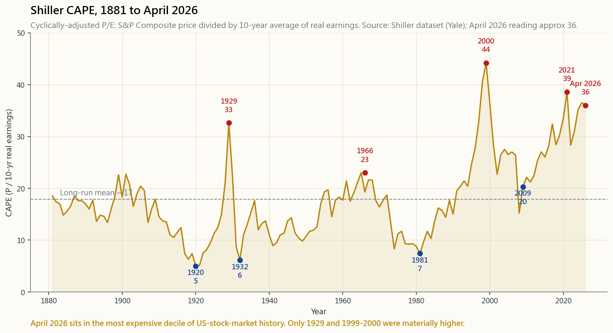
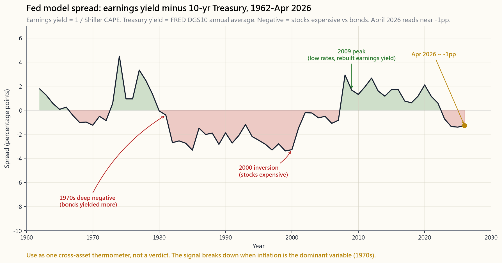

Week 21: Equity Valuation — DCF, Multiples, and the Fed Model
1. Why This Is Important
By Week 21 you can read three financial statements (Week 8), you understand capital structure (Week 19), and you can tell accounting earnings from real cash (Week 20). The natural next question — the one every beginner thinks valuation answers — is: *given all that, what is the stock actually worth?*
The honest answer is: nobody knows, and the people who claim to know to the second decimal place are usually selling something. Valuation is not a measurement; it is a structured argument about the future in present-value form. You build the argument anyway, because without it you have nothing to compare price against, and price without a value reference is just a moving number on a screen.
Four reasons to do this work, even knowing the output is fuzzy:
cash-flow model forces you to write down the actual cash you expect the business to throw off. If you cannot defend the numbers, you cannot defend the position. That alone filters out most "story stocks" before they hit your portfolio.
stock at 35× earnings is implicitly forecasting 12% earnings growth for a decade. The market does not announce that forecast on a banner. A reverse DCF makes the implicit forecast explicit, and you can ask: do I believe that?
is rare. Most apparent "value" outperformance over the long run is multiple compression risk in disguise — buying things that are statistically cheap and waiting for the multiple to mean- revert. That works in some regimes, fails in others (1998, 2017, 2020). Knowing what kind of bet you are actually making is half the battle.
Shiller CAPE of 36 — where it is in April 2026 — long-run real returns implied by the historical relationship are around 3% per year, not 7%. You can still own the index. You should just stop pencilling in 7% real to your retirement spreadsheet.
This week covers absolute valuation (DCF, terminal value, sensitivity, reverse DCF), relative valuation (P/E, P/B, EV/EBITDA, P/FCF, the Shiller CAPE), and one cross-asset signal — the Fed model — that compares the earnings yield of stocks against the 10-year Treasury yield. The hands-on tool at the end is a DCF lab where you move the sliders and watch the per-share intrinsic value swing.
2. What You Need to Know
2.1 The Two Schools — Absolute and Relative
Every valuation method falls into one of two camps.
Absolute valuation asks: what cash will this business produce over its life, and what is that cash worth today? The canonical tool is the discounted cash-flow (DCF) model. You forecast free cash flow for some explicit period (usually 5–10 years), assume a steady state after that (the "terminal value"), discount everything back at a rate that reflects the riskiness of the cash, and divide by share count. The output is a per-share number you can compare against the market price.
Relative valuation asks: how is this company priced compared to similar companies, or compared to its own history? The tools are multiples — P/E, P/B, EV/EBITDA, P/FCF, dividend yield, earnings yield. You don't need a forecast; you just need a peer group or a historical range.
Neither school is right or wrong. They answer different questions. DCF answers "what should I pay?" Multiples answer "what is the market currently paying for businesses like this?" In practice you do both and you look at where they disagree, because the disagreement is where the interesting question lives. If your DCF says $80 and the market is paying $200 at 40× earnings, the burden is on you to explain either why the market sees something you don't, or why the market is wrong. Both happen. Knowing which one you are betting on is the discipline.
A useful warning before we start: as Horace puts it, most "valuation alpha" is actually multiple-compression risk dressed up as insight — alpha is rare. Buying something at 12× earnings instead of 22× can be a free lunch — or it can mean you are buying a structurally deteriorating business at the moment its multiple stops being able to defend itself. The valuation toolkit doesn't tell you which one. Cash-flow stability does.
2.2 Discounted Cash Flow — The Mechanics
The DCF formula is one of the few places in finance where the maths is genuinely simple. Free cash flow each year, discounted at a rate $r$, summed:
$$ V_0 = \sum_{t=1}^{N} \frac{\text{FCF}_t}{(1+r)^t} + \frac{\text{TV}_N}{(1+r)^N} $$
Three pieces:
Explicit-period FCF. You forecast free cash flow for 5–10 years. "Free cash flow" here means cash from operations minus capex — the number from Week 20. For a growing business, you start from the trailing FCF, apply growth rates by year (often a fade — 12% in Y1 sliding down to 4% by Y5), and write down the projection.
Terminal value (TV). After the explicit period, the business keeps existing. You collapse the rest of the future into one number at year N. Two standard methods:
- Gordon growth (perpetuity): $\text{TV}_N = \dfrac{\text{FCF}_{N+1}}{r - g}$,
- Exit multiple: $\text{TV}_N = \text{FCF}_{N} \times M$, where $M$ is
Discount rate $r$. This is the weighted average cost of capital (WACC) for the firm — Week 19's number. For a typical large-cap US equity, WACC sits in the 7–10% range. For a speculative growth name, 12–15%. The choice drives the answer more than people realise.
The terminal value typically accounts for **60–80% of the total DCF output** for a normal-growth company. That is uncomfortable, and honest. Most of what you are valuing is the assumption about steady state.
2.3 Sensitivity — The WACC and g Knobs
Two numbers — the discount rate $r$ and the terminal growth $g$ — do most of the work in any DCF. Move either by 100 bps and the intrinsic value can swing 30%. The example below uses a $10/share starting FCF, growing 6% for five years then 3% terminal, with sensitivity around $r$ and $g$:
| $g = 2\%$ | $g = 3\%$ | $g = 4\%$ | |
|---|---|---|---|
| $r = 7\%$ | $238 | $300 | $440 |
| $r = 8\%$ | $182 | $221 | $290 |
| $r = 9\%$ | $148 | $174 | $215 |
| $r = 10\%$ | $124 | $143 | $169 |
Two takeaways: the formula is most violent in the upper-left corner where $r - g$ is small (the perpetuity denominator goes to zero), and a "cheap" stock at one $(r, g)$ pair can be expensive at the neighbouring pair. The honest output of any DCF is not a number; it is a range.
This is also why analyst price targets cluster. Twenty analysts running the same DCF will output twenty answers within ±10% of each other — not because the model is precise, but because they all gravitate to the same defensible $(r, g)$ region. The herd in price targets is a herd in WACC assumptions.
The hands-on lab at §2.7 lets you turn the knobs and watch.
2.4 Comparable Multiples — The Field Guide
When you don't have the patience for a DCF (or the business is too complicated for a clean cash-flow forecast), multiples do the job. Five matter.
P/E (price to earnings). Most cited, often misleading. Use diluted EPS, not basic. Use forward P/E (next 12 months) when you have analyst estimates you trust, trailing P/E when you don't. A "normal" S&P 500 P/E sits around 16–17×; the long-run Shiller CAPE mean (10-year smoothed real earnings) is also about 17. Sectors diverge: utilities 14–18×, banks 8–12×, consumer staples 18–25×, software 25–40×. Compare within sector, not across.
P/B (price to book). Market cap divided by shareholders' equity. Useful for banks and insurers because their assets are already mark-to-market-ish (loans, securities), so book value is meaningful. Useless for software, brand-led consumer, biotech, where intangibles are the asset and accounting doesn't capture them.
EV/EBITDA. Enterprise value (market cap + debt − cash) over earnings before interest, tax, depreciation, amortisation. Strips out capital-structure differences, which is why it is the standard in M&A. Weakness: EBITDA ignores capital intensity. A company with EBITDA of $1B and capex of $1.2B has an EV/EBITDA in line with peers and zero free cash flow. Use EV/EBITDA with a separate look at capex intensity, never alone.
P/FCF (price to free cash flow). The cleanest of the lot. Free cash flow is hard to fake (Week 20). For mature businesses, P/FCF in the 15–25× range is normal. Below 12×, you are either buying genuine cheapness or a value trap. Above 35×, you are paying explicitly for growth that may or may not arrive.
Earnings yield (E/P). The reciprocal of P/E. A stock at 20× earnings has a 5% earnings yield. The reason this matters separately from P/E: it puts equity earnings on the same axis as bond yields, which is exactly what the Fed model needs (§2.6).
2.5 Shiller CAPE — The Long History
Robert Shiller's cyclically-adjusted P/E (CAPE) takes the S&P 500 price and divides by the average of the last ten years of real earnings. The smoothing kills the cyclical noise that makes the trailing P/E spike to absurd levels in recessions (when the E collapses) and look reasonable at the top of a cycle (when E is at peak). The chart below plots CAPE from 1881 through April 2026.
![Shiller CAPE 1881-2026, with the long-run mean near 17 and the major peaks and troughs annotated. Peaks at 1929 (~32, just before the Crash), 1966 (~24), 2000 (~44, the dot-com top), 2021 (~38), and current 2026 reading near 36. Troughs at 1921 (~5), 1932 (~6, Depression bottom), 1949 (~10), 1981 (~8, Volcker stagflation low), 2009 (~13, financial crisis bottom). The current level sits in the most expensive 10% of US stock-market history; only 1929 and 1999-2000 were materially more expensive on this measure.](image/week21_cape_history.png)
Two patterns matter.
First, **CAPE mean-reverts on long horizons but is useless as a short-term timing signal**. CAPE was 25 in 1996, 30 in 1997, 38 in 1998, 44 in 1999, and only peaked in March 2000. Anyone who shorted the index at CAPE 25 lost their job before they got proven right. The signal is real on 10-year-forward returns; it is noise on 1-year- forward returns.
Second, the 80-year low (1981) and the modern range diverge. CAPE in 1981 was around 8 because Treasury yields were 14% — the cost of capital was crushing equity multiples. CAPE in 2009 was 13 because earnings had collapsed. CAPE in 2026 at 36 is because rates are 4% and tech-sector earnings dominate the index. The number is the same metric across the whole history, but the regime supporting it is wildly different.
Use CAPE as a temperature reading, not a buy/sell signal. When CAPE is in the top decile of history, expected real returns over the next decade are mid-single-digits at best. That is the calibration. It does not tell you to sell.
2.6 The Fed Model — Earnings Yield vs the 10-Year
The Fed model compares the earnings yield of equities (E/P) to the yield on 10-year Treasuries. The thesis: if E/P is much higher than the bond yield, equities are cheap relative to bonds, because their cash-flow yield exceeds the risk-free alternative. If E/P is below the bond yield, the bond market is offering a better risk-adjusted deal.
![Fed model spread 1962-2026, defined as S&P 500 cyclically-adjusted earnings yield (1/CAPE) minus 10-year Treasury yield. The line spends most of the 1970s deeply negative (bonds yielded 8-14% while CAPE earnings yield was 4-8%); flips firmly positive after the early 1980s rate peak, peaking around +6 percentage points in 2009 (low rates, depressed earnings yield was still high after the crash). Inverts to roughly -2 percentage points in 2000 (the dot-com top — bonds were a better deal than stocks). April 2026 reads close to zero — earnings yield around 2.8%, 10-year yield around 4.0%, a small negative spread suggesting bonds are the cleaner trade than stocks at the index level.](image/week21_fed_model.png)
Two warnings about the Fed model.
It is not in any Fed publication. The name comes from a 1997 Humphrey-Hawkins report chart. Greenspan never endorsed it as a valuation tool. Practitioners adopted the framework anyway because it is intuitive.
It conflates real and nominal. The earnings yield is a real quantity (earnings grow with inflation in the long run). The Treasury yield is nominal. Subtracting one from the other is a type error. The signal works best when inflation is stable; it breaks down precisely when inflation is the dominant variable (the 1970s, where the Fed model said equities were cheap for a decade while real returns on stocks were near zero).
Treat the Fed model as one cross-asset reference, not a verdict. At the April 2026 reading near zero, both stocks and bonds price in mediocre real returns. There is no obvious arbitrage between the two — which is itself information.
2.7 Reverse DCF — The Sanity Check
The reverse DCF flips the question. Instead of forecasting cash flow and computing intrinsic value, you take the *current market price* as given and ask: what growth rate, at the prevailing discount rate, makes this price the answer?
You hold $r$, $g$, and starting FCF fixed, and solve for the growth rate $g_e$ in the explicit period that produces $V_0 = \text{Price}$. The output is the growth implied by the price.
Example: AAPL at $215 with 14.5B shares is a $3.1T market cap. Trailing FCF is about $109B. If WACC is 9% and terminal growth is 3%, the explicit-period growth implied by the current price is roughly 5–6% per year over the next decade. Apple has grown FCF about 9% annualised over the last decade. The implied 5–6% is reasonable: it bakes in some maturation but not collapse. The price passes a basic sanity check.
For a richer comparison, run the reverse DCF on a meme stock at a $50B market cap with no FCF: the implied growth is "infinite from today's free cash flow." That is the moment you put the model down and admit you are not valuing this thing on cash.
The reverse DCF is the discipline that separates "buying because it's cheap on the model" from "buying because the model says miracles are required." The interactive lab in §2.7 includes a reverse-DCF readout for each preset stock — try it.
The hands-on tool: see interactive/week21_dcf_lab.html. Move the WACC, growth, and terminal-growth sliders, and watch the per-share intrinsic value swing for AAPL, MSFT, GOOGL, JPM, and KO.
3. Common Misconceptions
range. The number is precise; the inputs are not. Treat any DCF output as ±25% at best.
tobacco, and oil majors trade at low P/Es structurally because of regulatory, terminal, or commodity-price risk. The market isn't being stupid; it is pricing in a real future hazard.
the explicit forecast." Wrong direction.** TV is typically 60- 80% of total DCF for a steady-state business. The explicit period mostly bridges you to the assumption you actually care about: the steady state.
doesn't.** It is a rough cross-asset thermometer that ignores inflation regime entirely. It told you stocks were cheap in 1972 and you lost money in real terms for a decade.
and stocks went up." It's not broken — the signal is on 10-year forward returns, not next-year.** From CAPE 26 in 2014, the subsequent decade gave roughly 9% nominal CAGR — well below the long-run 10% but consistent with the elevated CAPE.
consumer brands, services), book value omits 80% of what makes the company valuable.** Use it for banks; ignore it elsewhere.
structure." Yes, and it also strips out capex, which is the line that separates a real business from a treadmill.** A cement producer at EV/EBITDA 8 may be more capital-hungry than a software company at EV/EBITDA 25.
That's a deep-value heuristic, and it fails the moment one of the names is structurally impaired.** Cheap relative to peers is meaningful only when the underlying business is comparable.
A higher $r$ lowers the present value of all future cash, but it also lowers TV — which is most of the answer. The conservatism is real; the magnitude is usually larger than people expect.
doesn't work for them." DCF works fine; the inputs are just harder.** What people mean is "I don't trust my own forecast," which is honest. The fix is wider sensitivity bands, not a different method.
4. Q&A Section
Q1. What discount rate should I use for a typical S&P 500 stock? WACC is the right answer; for most large-cap US firms it lands in the 7–9% band. If you don't want to compute WACC from scratch, 8% is a defensible default. For high-leverage or commodity-cycle names, push toward 10%; for defensive utilities, 6–7%.
Q2. How many years should the explicit DCF period cover? Five to ten. Five if the business is mature and stable (KO, JNJ). Ten if the business is in a clear high-growth phase that should fade to maturity (NVDA, GOOGL). Going past ten is forecasting performance art; you are pretending to know about regime that doesn't exist yet.
**Q3. Why does the Gordon growth formula go crazy when $r$ is close to $g$?** Because $\dfrac{\text{FCF}}{r - g}$ has a denominator that goes to zero. Mathematically: a perpetual cash flow growing at rate $g$ discounted at rate $r$ has finite present value only if $g < r$. If $g \geq r$, the present value is infinite — the cash flows grow faster than the discount eats them. This is why $g$ in practice has to be capped at long-run nominal GDP (~4-5%); above that, you are claiming the firm grows forever faster than the economy it lives in, which is impossible.
**Q4. What's the difference between P/E and Shiller CAPE in practice?** Trailing P/E uses the last twelve months of earnings. CAPE uses the average of the last ten years of real earnings (inflation- adjusted). The smoothing matters enormously at cycle turning points: in 2009, trailing P/E spiked above 100 because earnings collapsed faster than price; CAPE was around 13. CAPE is the more honest measure across cycles. P/E is the more responsive measure within a cycle.
Q5. Should I use forward P/E or trailing P/E? Forward, when the analyst estimates are credible (large-cap, well- covered, low cyclicality). Trailing, when the business is volatile or estimates have a wide spread. The gap between trailing and forward P/E tells you the implied growth rate: if trailing is 18× and forward is 15×, the market is pricing in 20% earnings growth.
Q6. Is the Fed model a buy/sell signal in 2026? No — but it is informative. April 2026 reading is near zero (E/P ~2.8%, 10y ~4.0%). That means cash earnings yield on the index is below the risk-free rate. Historically, that condition has preceded sub-par 5–10 year equity returns. It does not mean sell; it means lower your forward expectations and consider tilting a modest weight toward bonds (consistent with the four-tranche framework from Week 14).
**Q7. Why is reverse DCF more useful than regular DCF for big benchmark stocks?** Because everyone has already done the regular DCF and the answer is "price ≈ intrinsic value, give or take 10%." That is not actionable. Reverse DCF tells you the implied growth rate the market has priced in. Now you can ask whether that growth rate is reasonable versus history, versus competitors, versus what you think management can deliver. You're betting on a difference of opinion about growth, not on an absolute valuation gap.
Q8. Banks don't fit the DCF mould. What do I use? Residual income or P/B-vs-ROE. A bank trading at $1.5\times$ book when it earns 15% ROE is fairly priced (because $\text{P/B} \approx \text{ROE} \times \text{P/E}$, and a 10× P/E with 15% ROE pencils to 1.5× P/B). The cleanest one-number summary for a bank is ROTCE — return on tangible common equity. JPM at 22% ROTCE in FY2024 is structurally the highest-quality bank in the index, which is why it trades at a premium to peers.
**Q9. Multiples vary so much across sectors. How do I compare a software company at 30× to a utility at 15×?** You don't compare them directly. You compare each within its sector, and you compare the cross-sector premium ratio across time. If software-vs-utility usually trades at 1.7× the multiple and currently trades at 2.5×, you have learned something. The cross-sector level itself is not the signal; the change in the ratio is.
**Q10. How does Horace's "alpha is rare" principle apply to valuation?** Tightly. Most "valuation alpha" is regime-specific multiple compression and expansion that flips to the loser of the previous cycle. The 2000-2010 decade rewarded value because tech multiples collapsed; 2010-2020 rewarded growth because rates compressed and tech earnings exploded. Both decades had their crowd of "valuation experts" who looked smart for a while and then looked foolish. Genuine, repeatable valuation alpha comes from one narrow place: businesses that compound faster than the market discounts, and whose multiples don't blow out at the entry. Find those rarely; the rest is multiple-compression risk in a suit.
Q11. What should the DCF lab teach me beyond the slider game? That the answer depends almost entirely on three numbers — WACC, terminal growth, and the year-1 starting FCF — and that the same business can be priced "cheap" or "expensive" by 50% with rounding- error changes to those inputs. The lesson is humility, not precision.
**Q12. Is there a case to ignore valuation entirely and just index?** Yes — most of the time, for most people. US-listed equities are the investable universe; per Week 2, the index is the default. Valuation discipline matters when you are choosing individual names or deciding whether to tilt the index allocation up or down at extremes. At CAPE 36, you don't have to sell — but you do have to lower the return you write into your retirement plan. That single discipline is worth more than most stock-picking.
第21週：股票估值 — 現金流折現法、倍數估值與美聯儲模型
1. 為何此課題至關重要
學到第21週，你已能閱讀三份財務報表（第8週），了解資本結構（第19週），並能分辨會計盈利與真實現金（第20週）。接下來的自然問題——每位初學者認為估值能回答的問題——是：有了以上所有資料，這隻股票究竟值多少錢？
坦白答案是：沒人知道，而那些聲稱能精確到小數點後兩位的人，通常都是在兜售什麼。估值不是量度，而是一場以現值形式呈現的、關於未來的結構性論證。你仍然要建立這套論證，因為沒有它，你就沒有任何東西可以拿來和股價比較，而沒有價值參考的股價，只不過是螢幕上一個不斷移動的數字。
即使知道結果模糊，仍要做這項工作，有四個理由：
本週涵蓋絕對估值（現金流折現法、終值、敏感性分析、反向現金流折現法）、相對估值（市盈率、市賬率、息稅折舊攤銷前盈利倍數、市價自由現金流比率、席勒周期調整市盈率），以及一個跨資產信號——美聯儲模型——用以比較股票的盈利收益率與十年期國債收益率。本節末段的實作工具是一個現金流折現法實驗室，讓你撥動滑桿，觀察每股內在價值如何大幅波動。
2. 你需要掌握的知識
2.1 兩大流派——絕對估值與相對估值
所有估值方法都屬於兩大陣營之一。
絕對估值的問題是：這盤生意在其存續期間能產生多少現金，而這些現金在今天值多少？標準工具是現金流折現法模型。你預測某段明確期間（通常為5至10年）的自由現金流，假設此後進入穩定狀態（即「終值」），以反映現金風險程度的折現率折現所有數值，再除以股份數目。結果是一個可與市場價格比較的每股數字。
相對估值的問題是：這間公司的定價與同類公司相比，或與本身的歷史相比，處於什麼水平？工具是倍數——市盈率、市賬率、息稅折舊攤銷前盈利倍數、市價自由現金流比率、股息收益率、盈利收益率。你不需要預測，只需要一個可比同業群組或歷史區間。
兩個流派都沒有對錯，它們回答不同的問題。現金流折現法回答「我應該付多少錢？」，倍數回答「市場目前為同類生意付出多少錢？」實際操作中，你兩者都要做，然後看兩者在哪裡出現分歧，因為分歧之處正是有趣問題所在。如果你的現金流折現法說80美元，而市場以40倍市盈率的200美元交易，那麼你有責任解釋：要麼市場看到了你未看到的東西，要麼市場判斷有誤。兩種情況都會發生，清楚知道自己在下哪種賭注，才是紀律所在。
開始之前，先提一個有用的警告：正如陳馬所說，大多數「估值阿爾法」其實是偽裝成洞見的倍數壓縮風險——阿爾法罕有。以12倍市盈率買入而非22倍，有可能是免費午餐——也有可能意味著你正在買入一盤結構性衰退的生意，恰好在其倍數無法再自我支撐的時刻入場。估值工具組不會告訴你是哪種情況，現金流穩定性才會。
2.2 現金流折現法——運作機制
現金流折現法公式是金融學中為數不多、數學上確實簡單的地方。每年自由現金流，以折現率$r$折現，加總：
$$ V_0 = \sum_{t=1}^{N} \frac{\text{FCF}_t}{(1+r)^t} + \frac{\text{TV}_N}{(1+r)^N} $$
三個組成部分：
明確期間的自由現金流。 你預測5至10年的自由現金流。此處「自由現金流」指經營現金流減資本開支——即第20週的那個數字。對於增長中的生意，你從過去一年的自由現金流出發，按年應用增長率（通常呈遞減態勢——第1年12%，逐步降至第5年的4%），然後寫下預測。
終值（TV）。 明確期間結束後，生意仍然繼續存在。你把未來剩餘部分壓縮為第N年的一個數字。兩種標準方法：
- 戈登增長（永續年金）： $\text{TV}_N = \dfrac{\text{FCF}_{N+1}}{r - g}$，其中$g$為永續增長率。$g$必須低於長期名義本地生產總值增長率（4至5%）——你無法永遠比整體經濟增長更快——否則公式會爆炸。
- 退出倍數： $\text{TV}_N = \text{FCF}_{N} \times M$，其中$M$是來自同業或歷史的某個倍數（例如18倍自由現金流）。有用的交叉驗證；弱點在於倍數本身是一個相對估值數字，因此「絕對」計算引入了一個相對假設。
對於一間普通增長公司，終值通常佔現金流折現法總結果的60至80%。這令人不安，但誠實如此。你所估值的大部分，是關於穩定狀態的假設。
2.3 敏感性分析——加權平均資本成本與增長率的旋鈕
折現率$r$和終期增長率$g$這兩個數字，在任何現金流折現法中做了大部分工作。任一移動100個基點，內在價值便可波動30%。下表使用起始每股自由現金流10美元、未來五年增長6%、此後3%終期增長率的情境，並對$r$和$g$進行敏感性分析：
| $g = 2\%$ | $g = 3\%$ | $g = 4\%$ | |
|---|---|---|---|
| $r = 7\%$ | $238 | $300 | $440 |
| $r = 8\%$ | $182 | $221 | $290 |
| $r = 9\%$ | $148 | $174 | $215 |
| $r = 10\%$ | $124 | $143 | $169 |
兩個要點：公式在左上角最為劇烈，即$r - g$極小時（永續年金分母趨近於零），而在某個$(r, g)$組合下「廉價」的股票，在鄰近組合下可能變得昂貴。任何現金流折現法的誠實結果，不是一個數字，而是一個區間。
這也是分析師目標價聚集的原因。二十位分析師跑相同的現金流折現法，會得出二十個彼此相差不超過±10%的答案——不是因為模型精確，而是因為他們都趨向相同的、可辯護的$(r, g)$區間。目標價的羊群效應，是加權平均資本成本假設的羊群效應。
§2.7的實作實驗室讓你親自撥動這些旋鈕觀察效果。
2.4 可比倍數——實地指南
當你沒有耐心做現金流折現法（或生意太複雜，無法進行清晰的現金流預測）時，倍數能勝任這份工作。五個倍數值得關注。
市盈率（股價相對每股盈利）。 被引用最多，也最容易誤導。使用攤薄後每股盈利，而非基本每股盈利。有可信分析師預測時使用預測市盈率（未來12個月），否則使用過去市盈率。標普500的「正常」市盈率約為16至17倍；長期席勒周期調整市盈率均值（十年平滑實際盈利）亦約為17倍。板塊差異顯著：公用事業14至18倍、銀行8至12倍、消費必需品18至25倍、軟件25至40倍。在板塊內比較，切勿跨板塊比較。
市賬率（股價相對賬面值）。 市值除以股東權益。對銀行和保險公司有用，因為其資產已接近按市值計算（貸款、證券），賬面值具意義。對軟件、品牌主導的消費品、生物科技而言毫無用處——因為無形資產才是核心資產，而會計無法捕捉它們。
息稅折舊攤銷前盈利倍數（企業價值相對息稅折舊攤銷前盈利）。 企業價值（市值加債務減現金）除以息稅折舊攤銷前盈利。剔除資本結構差異，因此是併購的標準指標。弱點：息稅折舊攤銷前盈利忽略資本密集度。一間息稅折舊攤銷前盈利為10億美元、資本開支為12億美元的公司，其息稅折舊攤銷前盈利倍數與同業相若，自由現金流卻為零。息稅折舊攤銷前盈利倍數必須同時配合資本開支密集度來看，絕不能單獨使用。
市價自由現金流比率（股價相對自由現金流）。 最簡潔的一個。自由現金流難以造假（第20週已解釋原因）。對於成熟生意，15至25倍屬正常水平。低於12倍，要麼是真正的低廉，要麼是價值陷阱。高於35倍，你正在明確為可能到來或可能不到來的增長付出代價。
盈利收益率（每股盈利相對股價）。 市盈率的倒數。一隻股票以20倍市盈率交易，其盈利收益率為5%。這個指標看似瑣碎，卻單獨具有意義：它把股票盈利與債券收益率置於同一軸上，而這正是美聯儲模型所需要的（§2.6）。
2.5 席勒周期調整市盈率——漫長的歷史
羅伯特·席勒的周期調整市盈率（CAPE）取標普500指數的股價，除以過去十年實際盈利的平均值。這種平滑處理消除了週期性噪音——正是這些噪音令過去市盈率在經濟衰退時（盈利崩潰）飆升至荒謬水平，而在週期頂峰（盈利處於高峰）時看起來合理。下圖顯示1881年至2026年4月的周期調整市盈率走勢。

兩個值得關注的規律。
首先，周期調整市盈率在長期視角下均值回歸，但作為短期擇時信號毫無用處。1996年周期調整市盈率為25，1997年為30，1998年為38，1999年為44，直至2000年3月才見頂。任何在周期調整市盈率25時沽空指數的人，都在被證明正確之前已丟掉了工作。這個信號在10年遠期回報上是真實的；在1年遠期回報上則是噪音。
其次，八十年低位（1981年）與現代水平有本質區別。1981年周期調整市盈率約為8，因為國債收益率為14%——資金成本正在壓垮股票倍數。2009年周期調整市盈率為13，因為盈利崩潰。2026年周期調整市盈率為36，是因為利率為4%，科技板塊盈利主導了指數。這個數字在整個歷史中是相同的指標，但支撐它的週期環境截然不同。
將周期調整市盈率用作溫度計，而非買入/賣出信號。當周期調整市盈率處於歷史頂端十分位時，未來十年的預期實際回報充其量為中單位數。這是你的校準基準。它並不告訴你賣出。
2.6 美聯儲模型——盈利收益率對比十年期國債
美聯儲模型將股票的盈利收益率（每股盈利除以股價）與十年期國債收益率作比較。其論點是：如果盈利收益率遠高於債券收益率，股票相對債券便是廉價的，因為其現金流收益率超過了無風險替代品。若盈利收益率低於債券收益率，債券市場提供的風險調整後回報更佳。

關於美聯儲模型，有兩項警告。
它不見於任何美聯儲刊物中。 這個名稱源自1997年一份國會報告中的一張圖表。格林斯潘從未將其認可為估值工具。從業者仍然採用這個框架，因為它直觀易懂。
它混淆了實際值與名義值。 盈利收益率是實際量（盈利長期隨通脹增長）。國債收益率是名義量。兩者相減是類型錯誤。這個信號在通脹穩定時最有效；恰恰在通脹是主導變量時失效（1970年代，美聯儲模型整整一個十年都在說股票便宜，而股票的實際回報接近零）。
將美聯儲模型視為一個跨資產參考，而非裁決。在2026年4月接近零的讀數下，股票和債券的定價都反映出平庸的實際回報。兩者之間沒有明顯的套利機會——這本身就是一個信息。
2.7 反向現金流折現法——合理性驗證
反向現金流折現法將問題翻轉。不再預測現金流後計算內在價值，而是以當前市場價格為既定條件，問：在現行折現率下，什麼增長率能使這個價格成為答案？
你固定$r$、$g$和起始自由現金流，求解明確期間中使$V_0 = \text{股價}$成立的增長率$g_e$。結果是股價所隱含的增長率。
例子：蘋果公司股價215美元，145億股份，市值3.1萬億美元。過去一年自由現金流約1,090億美元。若加權平均資本成本為9%、終期增長率為3%，則當前股價所隱含的明確期間增長率約為未來十年每年5至6%。蘋果過去十年自由現金流年化增長約9%。隱含的5至6%合情合理：它反映了一定程度的成熟期調整，但並非崩潰。這個股價通過了基本的合理性驗證。
作更豐富的比較，對一隻市值500億美元、無自由現金流的迷因股進行反向現金流折現法：隱含增長率是「從今天的自由現金流出發，無限增長」。這正是你放下模型、承認自己無法以現金為基礎對其進行估值的時刻。
反向現金流折現法是一種紀律，區分「因模型顯示便宜而買入」與「因模型顯示需要奇蹟才合理而買入」。§2.7的互動實驗室為每隻預設股票提供反向現金流折現法讀數——請嘗試。
實作工具：請見 interactive/week21_dcf_lab.html。 撥動加權平均資本成本、增長率和終期增長率的滑桿，觀察蘋果、微軟、谷歌、摩根大通和可口可樂的每股內在價值如何波動。
3. 常見誤解
4. 問答環節
問1. 典型標普500成份股應使用什麼折現率？ 加權平均資本成本是正確答案；對大多數大型美國公司而言，區間落在7至9%。若不想從頭計算加權平均資本成本，8%是一個可辯護的預設值。對於高槓桿或商品週期股，推向10%；對於防守型公用事業，則為6至7%。
問2. 現金流折現法的明確預測期間應涵蓋幾年？ 五至十年。若生意成熟穩定（可口可樂、強生），則為五年。若生意明顯處於高增長階段且應逐步回歸成熟（英偉達、谷歌），則為十年。超過十年便是預測表演；你在假裝了解一個尚不存在的週期。
問3. 為何當$r$接近$g$時，戈登增長公式會變得混亂？ 因為$\dfrac{\text{FCF}}{r - g}$的分母趨近於零。從數學上看：以$r$折現的、以$g$增長的永續現金流，只有在$g < r$時才有有限現值。若$g \geq r$，現值為無限大——現金流的增長速度快過折現的消耗速度。這正是實際操作中$g$必須上限為長期名義本地生產總值增長率（約4至5%）的原因；超過這個水平，你在聲稱這間公司永遠比它所在的經濟體增長更快，這是不可能的。
問4. 市盈率與席勒周期調整市盈率在實際應用中有何區別？ 過去市盈率使用過去十二個月的盈利。周期調整市盈率使用過去十年實際盈利（經通脹調整）的平均值。這種平滑處理在週期轉折點至關重要：2009年，盈利崩潰速度快於股價，過去市盈率飆升至100倍以上；而周期調整市盈率約為13。周期調整市盈率是跨週期更誠實的指標。市盈率是週期內更靈敏的指標。
問5. 應使用預測市盈率還是過去市盈率？ 當生意大型、分析師覆蓋廣泛、週期性低、且分析師預測可信時，使用預測市盈率（未來12個月）。當生意波動性大或預測分歧廣泛時，使用過去市盈率。過去市盈率與預測市盈率之間的差距，告訴你隱含的增長率：若過去市盈率為18倍、預測市盈率為15倍，市場在定價20%的盈利增長。
問6. 2026年美聯儲模型是否構成買入/賣出信號？ 不——但它具有參考價值。2026年4月讀數接近零（盈利收益率約2.8%，十年期國債收益率約4.0%）。這意味著指數的現金盈利收益率低於無風險利率。從歷史上看，這種情況往往預示著未來5至10年的股票回報低於平均水平。這並不意味著賣出；它意味著降低前景預期，並考慮適度增持債券（與第14週的四槽位配置框架一致）。
問7. 為何反向現金流折現法比常規現金流折現法對大型基準股票更有用？ 因為所有人都已做過常規現金流折現法，答案是「股價≈內在價值，誤差約10%」。這沒有操作意義。反向現金流折現法告訴你市場已定價的隱含增長率。現在你可以問：這個增長率相對歷史、競爭對手、你對管理層能力的判斷是否合理？你在對增長的意見分歧下注，而非對絕對估值落差下注。
問8. 銀行不適合現金流折現法框架，應使用什麼替代方法？ 剩餘收益法或市賬率對比股本回報率。一間賺取15%股本回報率、以1.5倍賬面值交易的銀行，定價合理（因為$\text{市賬率} \approx \text{股本回報率} \times \text{市盈率}$，15%股本回報率乘以10倍市盈率等於1.5倍市賬率）。對銀行最簡潔的單一指標是有形普通股本回報率——摩根大通在2024財年的有形普通股本回報率為22%，是結構上質素最高的指數成份銀行，因此以溢價於同業的估值交易。
問9. 不同板塊的倍數差異懸殊，如何比較軟件公司的30倍與公用事業的15倍？ 不要直接比較。應在各板塊內進行比較，並隨時間追蹤跨板塊溢價比率的變化。若軟件對公用事業通常以1.7倍倍數差距交易，而當前為2.5倍，你已獲得了有用的信息。跨板塊的絕對水平本身不是信號，而這個比率的變化才是。
問10. 陳馬的「阿爾法罕有」原則如何應用於估值？ 非常緊密。大多數「估值阿爾法」是隨週期輪替的倍數壓縮和擴張，翻轉成為前一個週期的輸家。2000至2010年的十年以價值股獲勝，因為科技倍數崩潰；2010至2020年以增長股獲勝，因為利率壓縮而科技盈利爆發。兩個十年都有一批曾看起來聰明、後來看起來愚蠢的「估值專家」。真正可重複的估值阿爾法存在於一個狹窄之處：以比市場折現更快速度複利增長的生意，且入場時倍數沒有過度擴張。這樣的機會罕有；其餘的都是穿著西裝的週期押注風險。
問11. 現金流折現法實驗室除了滑桿遊戲，還應教會我什麼？ 答案幾乎完全取決於三個數字——加權平均資本成本、終期增長率和第一年起始自由現金流——而同一盤生意，只需對這些輸入進行四捨五入誤差級別的調整，定價就可以相差50%，顯得「便宜」或「昂貴」。這一課的啟示是謙遜，而非精確。
問12. 有沒有理由完全忽略估值，直接持有指數基金？ 有——大多數時候，對大多數人而言。美國上市股票是可投資的資產範疇；如第2週所述，指數基金是預設選擇。估值紀律在你選擇個別股票，或在極端情況下決定是否調整指數配置比重時才真正重要。在周期調整市盈率36的水平，你不必賣出——但你必須降低寫入退休計劃的回報預測。這一項簡單的重新校準，比大多數選股嘗試更有價值。
第21週：股票估值 — 現金流量折現法、乘數法與聯準會模型
1. 為什麼這很重要
學到第21週，你已能閱讀三種財務報表（第8週），理解資本結構（第19週），也能區分會計盈餘與真實現金（第20週）。下一個自然而然的問題——也是每個初學者以為估值能回答的問題——是：在掌握這一切的前提下，這支股票究竟值多少錢？
坦白說：沒有人知道，而那些宣稱能精確到小數點第二位的人，通常都是在推銷什麼。估值不是一種量測；它是一種以現值形式呈現的、關於未來的結構性論述。即便如此，你仍然需要建立這個論述，因為沒有它，你就沒有任何基準可以拿來對比價格，而沒有參考價值的價格，只不過是螢幕上一個不斷移動的數字。
做這項工作有四個理由，即使你知道結果是模糊的：
本週涵蓋絕對估值（現金流量折現法、終值、敏感性分析、逆向現金流量折現法）、相對估值（本益比、股價淨值比、EV/稅息折舊攤銷前獲利、股價自由現金流比、席勒CAPE），以及一個跨資產訊號——聯準會模型——它將股票的盈餘殖利率與10年期國庫券殖利率進行比較。最後的實作工具是一個現金流量折現法實驗室，讓你移動滑桿，觀察每股內含價值的波動。
2. 你需要了解的事
2.1 兩大學派——絕對估值與相對估值
每一種估值方法都屬於兩個陣營之一。
絕對估值問的是：這門生意在其存續期間能產生多少現金，而這些現金今天值多少錢？標準工具是現金流量折現法模型。你預測某段明確期間（通常是5到10年）的自由現金流，假設之後進入穩定狀態（即「終值」），以反映現金風險的折現率將所有數字折算回現值，再除以股份數。輸出結果是一個每股數字，可用來與市場價格比較。
相對估值問的是：這家公司的定價與同類公司相比如何，或與其自身歷史相比如何？工具是乘數——本益比、股價淨值比、EV/稅息折舊攤銷前獲利、股價自由現金流比、股利殖利率、盈餘殖利率。你不需要預測；你只需要一個同業群組或歷史區間。
兩個學派都沒有對錯之分。它們回答的是不同的問題。現金流量折現法回答「我應該付多少錢？」乘數法回答「市場目前對這類公司願意付多少倍？」在實務上，你會同時採用兩者，並觀察它們分歧的地方，因為分歧所在，正是有趣問題所在的地方。如果你的現金流量折現法說值80元，而市場以本益比40倍、200元的價格交易，那麼你有責任解釋：要麼市場看到了你沒看到的東西，要麼市場是錯的。兩種情況都可能發生。知道自己在賭哪一種，才是真正的紀律。
在開始之前，一個有用的警告：如同陳馬所說，大多數「估值阿爾法」實際上是穿著洞察力外衣的乘數壓縮風險——阿爾法很罕見。以本益比12倍買入、而非22倍，可能是免費的午餐——也可能意味著你在一家結構性惡化的企業乘數再也無法自我防守的那一刻買了進去。估值工具箱告訴不了你是哪一種。現金流的穩定性才能告訴你。
2.2 現金流量折現法——運作原理
現金流量折現法公式是金融領域中少數數學真正簡單的地方。每年的自由現金流，以利率$r$折現後加總：
$$ V_0 = \sum_{t=1}^{N} \frac{\text{FCF}_t}{(1+r)^t} + \frac{\text{TV}_N}{(1+r)^N} $$
三個組成部分：
明確期間的自由現金流。 你預測5到10年的自由現金流。這裡的「自由現金流」是指營運現金流減去資本支出——也就是第20週介紹的數字。對於一家成長中的企業，你從近期的自由現金流出發，逐年套用成長率（通常是遞減的——第1年12%，逐步降至第5年4%），並寫下預測數字。
終值（TV）。 明確期間結束後，企業仍然持續存在。你在第N年將剩餘的未來壓縮成一個數字。兩種標準方法：
- 戈登成長模型（永續年金）： $\text{TV}_N = \dfrac{\text{FCF}_{N+1}}{r - g}$，其中$g$是永續成長率。$g$必須低於長期名目國內生產毛額成長率（4-5%）——你不可能永遠以比整體經濟更快的速度成長——否則公式會爆炸。
- 退出乘數法： $\text{TV}_N = \text{FCF}_{N} \times M$，其中$M$是從同業或歷史記錄中取得的某個乘數（例如18倍自由現金流）。這是一個有用的交叉驗證；弱點在於乘數本身是一個相對估值數字，因此「絕對」的計算中引入了相對假設。
終值通常佔現金流量折現法總輸出的60至80%，對於正常成長的企業而言。這令人不安，但這是實話。你所估值的大部分內容，是關於穩定狀態的假設。
2.3 敏感性分析——加權平均資金成本與$g$這兩個旋鈕
兩個數字——折現率$r$和終值成長率$g$——主導了任何現金流量折現法的大部分工作。將其中任何一個移動100個基點，內含價值就可能波動30%。以下範例使用每股10元的起始自由現金流，前五年成長6%，之後終值成長率3%，並圍繞$r$和$g$進行敏感性分析：
| $g = 2\%$ | $g = 3\%$ | $g = 4\%$ | |
|---|---|---|---|
| $r = 7\%$ | $238 | $300 | $440 |
| $r = 8\%$ | $182 | $221 | $290 |
| $r = 9\%$ | $148 | $174 | $215 |
| $r = 10\%$ | $124 | $143 | $169 |
兩個重點：公式在左上角最為劇烈，因為$r - g$很小（永續年金分母趨近於零）；在某個$(r, g)$組合下「便宜」的股票，在相鄰的組合下可能是「昂貴」的。任何現金流量折現法的誠實輸出不是一個數字，而是一個區間。
這也是為什麼分析師目標價會群聚。二十位分析師跑同一個現金流量折現法，會輸出彼此相差±10%以內的二十個答案——不是因為模型精確，而是因為他們都傾向採用同樣可辯護的$(r, g)$區間。目標價的羊群效應，本質上是加權平均資金成本假設的羊群效應。
§2.7的實作實驗室讓你親手轉動這些旋鈕。
2.4 可比乘數法——實用指南
當你沒有耐心做現金流量折現法（或企業太複雜、難以做出清晰的現金流預測）時，乘數法就能派上用場。有五個是重要的。
本益比（股價對盈餘）。 被引用最多，也最容易誤導。使用稀釋後的每股盈餘，而非基本每股盈餘。當你信任分析師預測時使用預估本益比（未來12個月），不信任時使用歷史本益比。標普500的「正常」本益比約為16至17倍；長期席勒CAPE均值（10年平滑實質盈餘）也大約是17倍。各類股差異懸殊：公用事業14至18倍、銀行8至12倍、民生消費品18至25倍、軟體25至40倍。在類股內部比較，而非跨類股比較。
股價淨值比（股價對帳面價值）。 市值除以股東權益。對銀行和保險公司有用，因為它們的資產已接近市價計算（放款、有價證券），帳面價值有其意義。對軟體、品牌型消費品、生技公司則毫無意義——因為無形資產才是核心資產，而會計無法衡量它們。
EV/稅息折舊攤銷前獲利。 企業價值（市值加負債減現金）除以稅息折舊攤銷前獲利。剔除資本結構差異，這也是為什麼它是企業併購的標準指標。弱點：稅息折舊攤銷前獲利忽略了資本密集度。一家稅息折舊攤銷前獲利10億元、資本支出12億元的公司，EV/稅息折舊攤銷前獲利與同業相當，但自由現金流為零。使用EV/稅息折舊攤銷前獲利時，必須同時單獨審視資本支出密集度，不可單獨使用。
股價自由現金流比（股價對自由現金流）。 最乾淨的一個。自由現金流難以造假（第20週說明了原因）。對成熟企業而言，15至25倍是正常範圍。低於12倍，你買到的要麼是真正的便宜貨，要麼是價值陷阱。高於35倍，你是在為可能到來、也可能不到來的成長買單。
盈餘殖利率（盈餘對股價）。 本益比的倒數。本益比20倍的股票，盈餘殖利率為5%。這看似微不足道，但它之所以獨立於本益比之外而重要，是因為它將股票盈餘放在與債券殖利率相同的坐標軸上——這正是聯準會模型所需要的（§2.6）。
2.5 席勒CAPE——長期歷史
羅伯特·席勒的週期調整本益比（CAPE）取標普500價格，除以過去十年實質盈餘的平均值。這種平滑處理消除了週期性雜訊——而正是這種雜訊讓歷史本益比在衰退時（因為盈餘崩跌）飆升至荒謬水準，並在景氣頂峰時（因為盈餘到達頂點）看起來合理。以下圖表繪製了1881年至2026年4月的CAPE走勢。
兩個重要規律。
第一，CAPE在長期視野下均值回歸，但作為短期擇時訊號則毫無用處。1996年CAPE是25，1997年是30，1998年是38，1999年是44，直到2000年3月才真正見頂。任何在CAPE 25時放空指數的人，在被證明是對的之前早已失業。這個訊號在10年遠期報酬上是真實的；在1年遠期報酬上則是雜訊。
第二，80年低點（1981年）與現代區間之間存在顯著差異。1981年的CAPE約為8，是因為國庫券殖利率高達14%——資金成本正在壓縮股票乘數。2009年的CAPE為13，是因為盈餘崩跌。2026年CAPE達到36，是因為利率只有4%，且科技類股盈餘主導整個指數。跨越整段歷史，這是同一個指標，但支撐它的市場環境截然不同。
將CAPE用作溫度計，而非買賣訊號。當CAPE位於歷史最高十分位時，未來十年的預期實質報酬充其量也只有中個位數。這才是需要校準的地方。它並不是在告訴你要賣出。
2.6 聯準會模型——盈餘殖利率與10年期國庫券
聯準會模型比較股票的盈餘殖利率（盈餘對股價）與10年期國庫券的殖利率。其論點為：如果盈餘對股價遠高於債券殖利率，則股票相對於債券是便宜的，因為其現金流殖利率超過了無風險的替代選擇。若盈餘對股價低於債券殖利率，債券市場提供的風險調整後報酬更為划算。
關於聯準會模型，有兩點警告。
它不在任何聯準會的官方文件中。 這個名稱來自1997年一份漢弗萊-霍金斯報告中的一張圖表。葛林斯潘從未認可它為估值工具。實務界人士還是採用了這個框架，因為它直觀易懂。
它混淆了實質與名目。 盈餘殖利率是實質數量（長期而言，盈餘隨通膨成長）。國庫券殖利率是名目數量。將兩者相減是一種類型錯誤。這個訊號在通膨穩定時效果最佳；在通膨是主導變數時（例如1970年代），它恰好失靈——當時聯準會模型顯示股票便宜，但投資人持有股票的實質報酬幾乎為零整整十年。
將聯準會模型視為一個跨資產參考，而非最終裁決。以2026年4月接近零的讀數而言，股票和債券均隱含著平庸的實質報酬。兩者之間不存在明顯的套利機會——這本身也是一種資訊。
2.7 逆向現金流量折現法——理智的最後防線
逆向現金流量折現法反轉了問題。不是預測現金流來計算內含價值，而是將當前市場價格視為已知，問：在當前折現率下，什麼樣的成長率能讓這個價格成為答案？
你固定$r$、$g$和起始自由現金流，求解明確期間的成長率$g_e$，使得$V_0 = \text{價格}$。輸出是價格所隱含的成長率。
範例：蘋果公司（AAPL）股價215美元，145億股，市值3.1兆美元。近期自由現金流約為1,090億美元。若加權平均資金成本為9%，終值成長率為3%，則當前股價所隱含的明確期間年複合成長率大約是未來十年每年5至6%。蘋果過去十年的自由現金流年複合成長率約為9%。隱含的5至6%是合理的：它預設了一定的成熟化，但並非崩潰。這個股價通過了基本的理智檢驗。
要做更豐富的比較，可以對一支市值500億美元、沒有自由現金流的迷因股跑逆向現金流量折現法：隱含的成長率是「從今天的自由現金流起無限大」。那就是你放下模型，承認你根本不是在用現金估值這個東西的時刻。
逆向現金流量折現法是那條紀律線，分隔「因模型顯示便宜而買入」和「因模型說需要奇蹟才能成立而買入」這兩種行為。§2.7的互動實驗室針對每支預設股票都提供了逆向現金流量折現法讀數——試試看。
實作工具：見 interactive/week21_dcf_lab.html。移動加權平均資金成本、成長率和終值成長率的滑桿，觀察蘋果（AAPL）、微軟（MSFT）、谷歌（GOOGL）、摩根大通（JPM）和可口可樂（KO）的每股內含價值如何波動。
3. 常見迷思
4. 問答章節
問1. 我應該對典型的標普500股票使用什麼折現率？ 加權平均資金成本是正確答案；對大多數美國大型股而言，它落在7至9%的區間。如果你不想從頭計算加權平均資金成本，8%是個可辯護的預設值。對於高槓桿或原物料週期性企業，推向10%；對於防禦性的公用事業，則為6至7%。
問2. 現金流量折現法的明確期間應該涵蓋幾年？ 五到十年。若企業成熟穩健（如可口可樂、嬌生），選五年。若企業正處於清晰的高速成長階段，預計逐步走向成熟（如輝達、谷歌），選十年。超過十年就是在表演預測；你是在假裝了解一個尚未存在的市場環境。
問3. 為什麼當$r$接近$g$時，戈登成長公式會失控？ 因為$\dfrac{\text{FCF}}{r - g}$的分母趨近於零。從數學角度看：一個以$g$速度永久成長、以$r$折現的現金流，只有在$g < r$時才有有限的現值。若$g \geq r$，現值為無限大——現金流成長的速度快過折現率消耗它的速度。這就是為什麼$g$在實務上必須設定上限，不能超過長期名目國內生產毛額成長率（約4-5%）；超過這個水準，你就是在聲稱這家企業將永遠以超越其所在經濟體的速度成長，這是不可能的。
問4. 本益比和席勒CAPE在實務上有什麼差異？ 歷史本益比使用過去十二個月的盈餘。CAPE使用過去十年實質盈餘（經通膨調整）的平均值。在景氣週期轉折點，這種平滑處理至關重要：2009年，歷史本益比因盈餘崩跌得比股價快，飆升至100倍以上；CAPE則約為13。跨越週期而言，CAPE是更誠實的指標。在週期內部，本益比則是反應更靈敏的指標。
問5. 我應該使用預估本益比還是歷史本益比？ 當分析師預測可信時（大型股、研究覆蓋廣泛、週期性低）使用預估本益比。當企業波動性大或預測區間寬廣時使用歷史本益比。歷史本益比與預估本益比之間的差距，告訴你隱含的成長率：若歷史本益比為18倍、預估本益比為15倍，市場正在為20%的盈餘成長定價。
問6. 聯準會模型在2026年是買賣訊號嗎？ 不是——但它提供了有用的資訊。2026年4月的讀數接近零（盈餘對股價約2.8%，10年期約4.0%）。這意味著指數的現金盈餘殖利率低於無風險利率。從歷史上看，這個條件之後，往往預示未來5至10年的股票報酬偏弱。這不意味著要賣出；而是意味著降低你的遠期預期，並考慮將適度的權重轉向債券（與第14週的四資金池框架一致）。
問7. 為什麼逆向現金流量折現法對大型基準股票比正向現金流量折現法更有用？ 因為所有人都已經做過正向現金流量折現法了，答案是「股價≈內含價值，上下差10%」。這沒有操作意義。逆向現金流量折現法告訴你市場已定價的隱含成長率。現在你可以問：這個成長率與歷史、競爭對手、以及你認為管理層能做到的相比，是否合理？你在押注的是對成長率的看法分歧，而不是絕對估值缺口。
問8. 銀行不適合現金流量折現法框架。那用什麼？ 剩餘收益法或股價淨值比對股東權益報酬率。一家帳面價值1.5倍、股東權益報酬率15%的銀行定價合理（因為$\text{股價淨值比} \approx \text{股東權益報酬率} \times \text{本益比}$，而15%股東權益報酬率乘以10倍本益比，得出1.5倍股價淨值比）。對銀行而言，最簡潔的單一數字摘要是有形普通股報酬率（ROTCE）。摩根大通2024年財年ROTCE達22%，是指數中結構性最高品質的銀行，這也是它相對於同業溢價交易的原因。
問9. 各類股的乘數差異如此之大。我要如何比較本益比30倍的軟體公司與本益比15倍的公用事業？ 你不直接比較它們。你在各自類股內部比較，並觀察跨類股溢價比率隨時間的變化。若軟體對公用事業通常交易在1.7倍乘數，而現在是2.5倍，你就學到了一些東西。跨類股的絕對水準本身不是訊號；比率的變動才是。
問10. 陳馬的「阿爾法很罕見」原則如何應用於估值？ 非常緊密。大多數「估值阿爾法」是特定市場環境下的乘數壓縮與擴張，會在上一個週期的輸家反轉時翻轉。2000至2010年代，科技乘數崩跌讓價值型策略獲獎；2010至2020年代，利率壓縮、科技盈餘爆炸讓成長型策略獲獎。兩個十年都有他們的「估值專家」，風光一時後又淪為笑柄。真正可重複的估值阿爾法只存在於一個狹窄之處：複合速度超越市場折現的企業，且在進場時乘數沒有爆炸。這種機會很罕見；其餘的都是穿著體面西裝的市場環境賭注。
問11. 現金流量折現法實驗室能教我什麼，超越滑桿遊戲本身？ 它告訴你，答案幾乎完全取決於三個數字——加權平均資金成本、終值成長率和第1年起始自由現金流——而同一門生意，只要對這些輸入做出四捨五入範圍內的調整，就可以被定價為「便宜」或「昂貴」達50%的差距。這堂課的啟示是謙遜，而非精確。
問12. 有沒有理由完全忽視估值，直接投資指數基金？ 有——對大多數人而言，在大多數時候，是這樣的。美國上市股票是可投資的宇宙；如第2週所述，指數基金是預設選項。估值紀律在你挑選個別股票，或決定是否在極端水準調整指數基金配置時才重要。在CAPE 36時，你不必賣出——但你確實必須降低寫入退休計畫的報酬預期。光是這個單一的重新校準，就比大多數選股嘗試更有價值。
第21周：股票估值——现金流折现法、估值乘数与美联储模型
1. 为何这一主题至关重要
学到第21周，你已能读懂三张财务报表（第8周），理解资本结构（第19周），并能分辨会计盈利与真实现金（第20周）。下一个自然而然的问题——也是每一位初学者认为估值能够回答的问题——是：综合以上所有信息，这只股票到底值多少钱？
诚实的答案是：没有人知道。那些声称精确到小数点后两位的人，通常都是在卖东西。估值不是一种度量；它是一种以现值形式表达的、关于未来的有结构的论证。即便如此，你依然要构建这套论证，因为没有它，你就没有任何东西可以与价格对比，而没有价值参照的价格，不过是屏幕上一个来回跳动的数字。
即知道结果是模糊的，仍要做这项工作的四个理由：
本周涵盖：绝对估值（现金流折现法、终值、敏感性分析、反向现金流折现法）、相对估值（市盈率、市净率、EV/息税折旧摊销前利润、市价/自由现金流、席勒周期调整市盈率），以及一个跨资产信号——美联储模型——它将股票的盈利收益率与10年期国债收益率进行比较。最后的实操工具是一个现金流折现法实验室，你可以拖动滑块，观察每股内在价值的波动。
2. 你需要掌握的内容
2.1 两大流派——绝对估值与相对估值
每一种估值方法都属于两大阵营之一。
绝对估值问的是：这家企业在其生命周期内将产生多少现金，这些现金在今天值多少钱？标准工具是现金流折现法模型。你预测某一明确时期（通常为5至10年）的自由现金流，假设此后进入稳定状态（即"终值"），以反映现金流风险性的折现率折现所有金额，再除以股份数量。输出结果是一个每股数值，可与市场价格进行比较。
相对估值问的是：与同类公司相比，或与自身历史相比，这家公司的定价如何？工具是估值乘数——市盈率、市净率、EV/息税折旧摊销前利润、市价/自由现金流、股息率、盈利收益率。你不需要预测；你只需要一个可比同类群体或历史区间。
两种流派都没有对错之分，它们回答的是不同的问题。现金流折现法回答"我应该支付多少？"估值乘数回答"市场目前为此类企业支付多少？"在实践中，你两者都做，然后观察它们的分歧所在，因为分歧正是有趣问题所在的地方。如果你的现金流折现法给出80美元，而市场以40倍市盈率支付200美元，那么你需要解释：要么市场看到了你没看到的东西，要么市场错了。两种情况都会发生。清楚地知道你在押注哪一种，才是真正的自律。
在开始之前，有一条有益的警示：正如陳馬所说，大多数"估值阿尔法"其实是多重压缩风险乔装成的洞见——阿尔法极为罕见。以12倍市盈率买入而非22倍可以是免费的午餐——也可能意味着你在一家结构性退化的企业的估值乘数失去防御能力的那一刻买入。估值工具箱无法告诉你是哪一种。现金流稳定性才能说明问题。
2.2 现金流折现法——机制原理
现金流折现法的公式是金融领域中少数数学上真正简单的地方之一。每年的自由现金流，以折现率$r$折现，求和：
$$ V_0 = \sum_{t=1}^{N} \frac{\text{FCF}_t}{(1+r)^t} + \frac{\text{TV}_N}{(1+r)^N} $$
三个组成部分：
明确期自由现金流。 你预测5至10年的自由现金流。这里的"自由现金流"是指经营现金流减去资本支出——即第20周中的那个数字。对于一家成长型企业，你从过去12个月的自由现金流出发，按年度应用增长率（通常呈逐步放缓态势——第1年12%，到第5年降至4%），并写下预测值。
终值（TV）。 明确期结束后，企业仍然持续经营。你将未来的剩余部分折叠为第N年末的一个数字。两种标准方法：
- 戈登增长模型（永续年金法）： $\text{TV}_N = \dfrac{\text{FCF}_{N+1}}{r - g}$，其中$g$是永续增长率。$g$必须低于长期名义国内生产总值增长率（4至5%）——你无法永远比所处的经济体增长得更快——否则公式将趋向无穷大。
- 退出乘数法： $\text{TV}_N = \text{FCF}_{N} \times M$，其中$M$是从同类公司或历史数据中提取的某个乘数（例如18倍自由现金流）。这是一个有用的交叉验证；弱点在于乘数本身是一个相对价值数字，因此"绝对"计算引入了相对假设。
对于正常增长型公司，终值通常占现金流折现法总输出的60至80%。这令人不安，但这是实情。你所估值的大部分内容，是关于稳定状态的假设。
2.3 敏感性分析——加权平均资本成本与增长率两个旋钮
两个数字——折现率$r$和终值增长率$g$——主导着任何现金流折现法的大部分结果。将其中任何一个移动100个基点，内在价值就可能波动30%。以下示例使用每股起始自由现金流10美元，前五年增长6%，终值增长率3%，围绕$r$和$g$进行敏感性分析：
| $g = 2\%$ | $g = 3\%$ | $g = 4\%$ | |
|---|---|---|---|
| $r = 7\%$ | $238 | $300 | $440 |
| $r = 8\%$ | $182 | $221 | $290 |
| $r = 9\%$ | $148 | $174 | $215 |
| $r = 10\%$ | $124 | $143 | $169 |
两点启示：在$r - g$极小时（永续年金分母趋近于零），公式在左上角最为剧烈；在某一$(r, g)$组合下"便宜"的股票，在相邻的组合下可能是贵的。任何现金流折现法的诚实输出，不是一个数字，而是一个区间。
这也是为什么分析师目标价会扎堆的原因。二十位分析师运行同一个现金流折现法，会得出彼此之间相差在±10%以内的二十个答案——不是因为模型精确，而是因为他们都倾向于同一个可辩护的$(r, g)$区间。目标价中的从众，是加权平均资本成本假设中的从众。
§2.7的实操实验室让你亲自调节这些旋钮并观察结果。
2.4 可比估值乘数——实战指南
当你没有耐心做现金流折现法（或业务过于复杂，无法做出清晰的现金流预测）时，估值乘数就派上用场了。以下五个最为重要。
市盈率（P/E）。 引用最多，也最容易误导。使用稀释后每股收益，而非基本每股收益。当你信任分析师预测时使用预测市盈率（未来12个月），不信任时使用历史市盈率。标普500的"正常"市盈率约为16至17倍；长期席勒周期调整市盈率均值（10年平滑实际盈利）也约为17倍。各板块差异显著：公用事业14至18倍、银行8至12倍、消费必需品18至25倍、软件25至40倍。在同一板块内比较，不要跨板块比较。
市净率（P/B）。 市值除以股东权益。对银行和保险公司有用，因为其资产已接近按市值计价（贷款、证券），账面价值具有实质意义。对软件、品牌主导型消费品、生物科技而言则毫无用处——因为这些公司的核心资产是无形资产，会计无法捕捉其价值。
EV/息税折旧摊销前利润。 企业价值（市值+债务−现金）除以息税折旧摊销前利润。剔除了资本结构差异，这也是并购中的标准指标。弱点：息税折旧摊销前利润忽略资本密集度。一家息税折旧摊销前利润为10亿美元、资本支出为12亿美元的公司，其EV/息税折旧摊销前利润与同类公司相当，但自由现金流为零。使用EV/息税折旧摊销前利润时，务必同时单独审视资本支出密集度，不可单独使用该指标。
市价/自由现金流（P/FCF）。 最为清晰的指标。自由现金流难以造假（第20周已阐明原因）。对于成熟型企业，15至25倍属于正常水平。低于12倍，要么是真实的低估，要么是价值陷阱。高于35倍，你支付的代价是明确押注于一个可能到来、也可能不到来的增长。
盈利收益率（E/P）。 市盈率的倒数。一只股票以20倍市盈率交易，则其盈利收益率为5%。这一指标单独存在的意义在于：它将股票盈利置于与债券收益率相同的坐标轴上，这正是美联储模型所需要的（§2.6）。
2.5 席勒周期调整市盈率——长期历史视角
罗伯特·席勒的周期调整市盈率（CAPE）取标普500价格，除以过去十年实际盈利的平均值。这种平滑处理消除了周期性噪音——而正是这种噪音，会使历史市盈率在经济衰退中（盈利崩塌时）飙升至荒谬水平，并在周期顶部（盈利处于峰值时）看起来合理。下图绘制了1881年至2026年4月的周期调整市盈率走势。
两个值得关注的规律。
第一，周期调整市盈率在长期时间跨度上均值回归，但作为短期择时信号毫无用处。1996年周期调整市盈率为25，1997年为30，1998年为38，1999年为44，直到2000年3月才见顶。任何在周期调整市盈率25时做空指数的人，都会在被证明正确之前先失去工作。该信号在10年期远期收益率上是真实有效的；在1年期远期收益率上则是噪音。
第二，80年低点（1981年）与现代区间差异显著。1981年周期调整市盈率约为8，因为当时国债收益率为14%——资本成本压制了股票估值乘数。2009年周期调整市盈率为13，因为盈利崩塌。2026年周期调整市盈率为36，因为当前利率为4%，且科技板块盈利主导指数。整段历史中使用的是同一指标，但支撑其运作的市场环境截然不同。
将周期调整市盈率作为温度读数使用，而非买入/卖出信号。当周期调整市盈率处于历史最高十分位时，未来十年的预期实际收益率充其量为中等个位数。这是用于校准的数据，并不要求你卖出。
2.6 美联储模型——盈利收益率与10年期国债收益率
美联储模型将股票盈利收益率（E/P）与10年期国债收益率进行比较。其论点是：如果E/P远高于债券收益率，则股票相对于债券便宜，因为其现金流收益率超过了无风险替代品。如果E/P低于债券收益率，则债券市场提供了更好的风险调整后回报。
关于美联储模型的两点警示。
它不出现在任何美联储出版物中。 这个名字来源于1997年一份国会听证报告中的一张图表。格林斯潘从未将其认可为估值工具。实务工作者仍然采用这一框架，因为它直观易懂。
它混淆了实际值与名义值。 盈利收益率是实际量（盈利从长期来看随通胀增长）。国债收益率是名义量。将两者相减，在逻辑上存在类型错误。该信号在通胀稳定时效果最佳；在通胀成为主导变量时（如1970年代）则会失效——而1970年代美联储模型显示股票便宜，但股票的实际收益率长达十年近乎为零。
将美联储模型视为一个跨资产参考，而非定论。2026年4月的读数接近零，股票与债券均预示着平庸的实际收益。两者之间没有明显的套利机会——这本身就是有价值的信息。
2.7 反向现金流折现法——理智核查
反向现金流折现法将问题翻转。你不再预测现金流并计算内在价值，而是以当前市场价格为既定条件，问：在现行折现率下，什么样的增长率能使这个价格成为答案？
你固定$r$、$g$和起始自由现金流，求解明确期中使$V_0 = \text{价格}$的增长率$g_e$。输出结果是价格所隐含的增长率。
示例：苹果公司（AAPL）股价215美元，145亿股，市值3.1万亿美元。过去12个月自由现金流约为1090亿美元。若加权平均资本成本为9%，终值增长率为3%，则当前价格所隐含的明确期增长率约为未来十年每年5至6%。苹果过去十年自由现金流年化增长约为9%。隐含的5至6%是合理的：它考虑了一定程度的成熟放缓，但并非崩塌。该价格通过了基本的理智核查。
作为对比，对一家市值500亿美元、无自由现金流的概念股进行反向现金流折现法：隐含增长率为"从当前自由现金流出发无限增长"。这就是你放下模型、承认你并非在以现金为基础对这只股票进行估值的那一刻。
反向现金流折现法是区分"因模型显示便宜而买入"与"模型显示需要奇迹才能合理定价而买入"的自律工具。§2.7的互动实验室包含每只预设股票的反向现金流折现法读数——请务必尝试。
实操工具请见：interactive/week21_dcf_lab.html。调节加权平均资本成本、增长率和终值增长率滑块，观察苹果公司（AAPL）、微软（MSFT）、谷歌（GOOGL）、摩根大通（JPM）和可口可乐（KO）的每股内在价值波动。
3. 常见误解
4. 问答环节
问题1. 对于典型的标普500股票，我应该使用什么折现率？ 加权平均资本成本是正确答案；对于大多数美国大盘股而言，它落在7至9%区间。如果你不想从头计算加权平均资本成本，8%是一个可辩护的默认值。对于高杠杆或大宗商品周期性标的，推向10%；对于防御性公用事业股，使用6至7%。
问题2. 现金流折现法的明确期应覆盖多少年？ 五至十年。若企业成熟且稳定（可口可乐、强生），则为五年。若企业处于清晰的高增长阶段且应逐渐成熟（英伟达、谷歌），则为十年。超过十年就是预测表演艺术；你在假装了解一个尚不存在的时代的情况。
问题3. 为什么当$r$接近$g$时，戈登增长公式会失控？ 因为$\dfrac{\text{FCF}}{r - g}$的分母趋近于零。从数学上看：只有在$g < r$时，以$r$折现的永续增长现金流才有有限的现值。若$g \geq r$，现值趋向无穷——现金流的增长速度超过了折现率的侵蚀速度。这就是为什么实践中$g$必须上限为长期名义国内生产总值增长率（约4至5%）；超过这个水平，你就是在声称该企业永远比它所处的经济体增长更快，这在现实中不可能发生。
问题4. 市盈率与席勒周期调整市盈率在实践中有何区别？ 历史市盈率使用过去十二个月的盈利。席勒周期调整市盈率使用过去十年实际盈利（经通胀调整）的平均值。这种平滑处理在周期转折点至关重要：2009年，历史市盈率因盈利崩塌速度超过价格下跌而飙升至100倍以上；而周期调整市盈率约为13倍。席勒周期调整市盈率是跨周期更诚实的衡量标准，市盈率则是周期内响应更快的衡量标准。
问题5. 我应该使用预测市盈率还是历史市盈率？ 当分析师预测可信时（大盘股、覆盖充分、低周期性），使用预测市盈率。当企业波动性较大或预测分歧较大时，使用历史市盈率。历史市盈率与预测市盈率之间的差距，揭示了隐含的增长率：若历史市盈率为18倍，预测市盈率为15倍，则市场预计盈利增长20%。
问题6. 美联储模型在2026年是否构成买入/卖出信号？ 不构成——但它提供了有价值的信息。2026年4月的读数接近零（E/P约2.8%，10年期国债约4.0%）。这意味着指数的现金盈利收益率低于无风险利率。从历史来看，这一状况往往预示着未来5至10年股票收益低于正常水平。这不意味着卖出；它意味着降低你对未来的预期，并考虑将适度权重向债券倾斜（与第14周的四仓结构框架一致）。
问题7. 对于大型基准股票，为何反向现金流折现法比正向现金流折现法更有用？ 因为所有人都已经做过正向现金流折现法，答案都是"价格≈内在价值，误差在±10%以内"。这不具备可操作性。反向现金流折现法告诉你市场已定价的隐含增长率。现在你可以问：这个增长率与历史相比是否合理？与竞争对手相比呢？与你认为管理层能够实现的相比呢？你押注的是对增长的不同判断，而不是绝对的估值差距。
问题8. 银行不适合现金流折现法框架。我该用什么方法？ 剩余收益法或市净率相对净资产收益率分析。一家银行以$1.5\times$账面价值交易，同时净资产收益率为15%，定价合理（因为$\text{P/B} \approx \text{ROE} \times \text{P/E}$，15%净资产收益率乘以10倍市盈率对应1.5倍市净率）。评估银行最简洁的单一数字是有形普通股权益回报率（ROTCE）。摩根大通2024财年的有形普通股权益回报率为22%，是指数中结构性质地最优的银行，这正是它相对于同业溢价交易的原因。
问题9. 估值乘数在各板块间差异如此之大。我如何比较一家30倍市盈率的软件公司与一家15倍市盈率的公用事业公司？ 不要直接比较。在各自板块内分别比较，然后跨时间比较两板块的溢价比率。如果软件相对于公用事业通常以1.7倍的乘数溢价交易，而当前为2.5倍，那么你学到了一些东西。跨板块的绝对水平本身不是信号；比率的变化才是。
问题10. 陳馬的"阿尔法极为罕见"原则如何应用于估值？ 非常紧密。大多数"估值阿尔法"是特定市场环境下的估值乘数压缩与扩张，并在环境转换时翻转为前一周期的输家。2000至2010年代奖励价值，因为科技板块估值乘数崩塌；2010至2020年代奖励成长，因为利率压缩、科技盈利爆发。两个十年都有各自的"估值专家"明星，风光一时，随后在环境转折时黯然失色。真正可重复的估值阿尔法来自一个极窄的地方：以高于市场折现水平复利增长的企业，且在买入时估值乘数没有泡沫化。这样的机会极为罕见；其余都是穿着西装的市场环境押注。
问题11. 现金流折现法实验室除了滑块游戏之外，还应该教给我什么？ 答案几乎完全取决于三个数字——加权平均资本成本、终值增长率和第一年起始自由现金流——同一家企业，仅凭这些输入的四舍五入差异，就可以让定价从"便宜"变为"贵"，偏差高达50%。这堂课教给你的是谦逊，而非精确。
问题12. 有没有理由完全忽略估值，直接做指数投资？ 有——对大多数人、在大多数时候都是如此。美国上市股票是可投资的宇宙；如第2周所述，指数是默认选择。估值纪律在你选择个股，或在极端情况下决定是否调整指数配置权重时才真正重要。在周期调整市盈率为36时，你不必卖出——但你确实需要降低写入退休规划的收益率预期。这个单一的重新校准，比大多数选股尝试都更有价值。